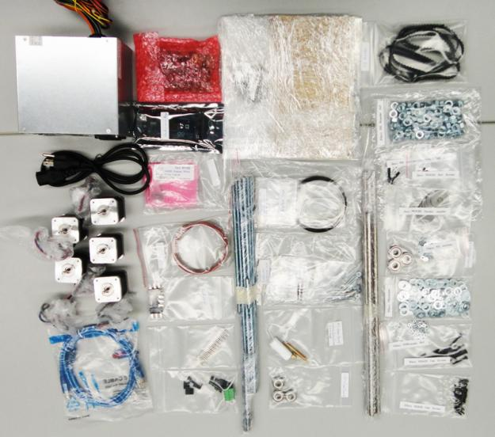
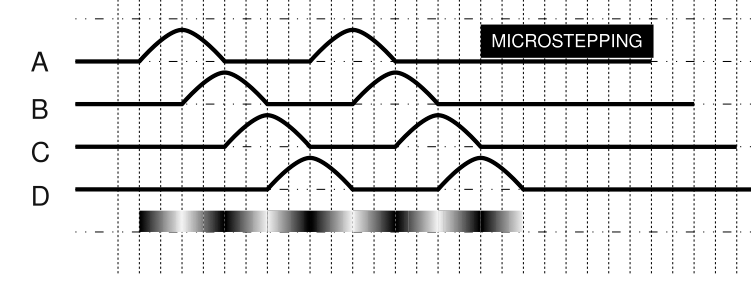

3D Drucker
Eine Einführung
schinken
November 27, 2012
Übersicht
- Einleitung
- Modelle
- RepRap
- Funktionsweise
- Vom Modell zum Druck
- Der Druckvorgang
- Beispiele / Fazit
... als 3D Drucker noch aus Holz waren
Geschichte
Erster 3D Drucker
- 1984 - 3D Systems gegründet von Charles Hull
- 1992 - Stereolithographie Apparatus
- Photopolymer
- "Lasers"
Stereolithografie
Zeitraffer
- 1984/1992 - 3D Systems
- 1995 - MIT-Studenten prägen den Begriff "3D Printing"
- 2005 - Dr. Adrian Bowyer gründet RepRap Initiative
- 2008 - Self-Replicating Printer
- 2009 - DIY Kits
Nutzung
- Flugzeugtechnik ('11 Robotic Aircraft)
- Automotive ('11 Auto "Urbee")
- Medizin ('03 Niere, '08 Beinprothese, '12 Kiefer)
- Militär (Ersatzteile)
- DIY / Rapid Prototyping
... die wichtigen Modelle auf einem Blick
Modelle
Orca
Quelle: mendel-parts.com
Makerbot
 Quelle: makerbot.com
Quelle: makerbot.com
Ultimaker
Quelle: ultimaker.com
RepRap
Quelle: grrf.de
...unser Drucker!
RepRap
Hintergrundinfos
- Replicating Rapid-Prototyper
- Pläne und Software sind GPL
- 13. September 2006 - Erster Prototyp (v0.2)
- 28. Mai 2008 - Darwin, v1.0
- Oktober 2009 - Mendel, v2.0
Warum RepRap?
- Sehr weit verbreitet
- Große Community
- Viele Varianten/Weiterentwicklungen
- Relativ günstig (Material 500€)
- Einfacher Aufbau...
Das Kit

Aufbau Part I

Aufbau Part II
Details I
Details II

RAMPS
- Arduino Mega
- Motorsteuerung
- Temperaturfühler
- Heizungssteuerung
- Firmware: Sprinter, Marlin
RAMPS
Probleme
- Maßangaben stimmten nicht
- Keine Dokumentation des Extruders
- Extruderprobleme (Wackeln, Zahnrad)
- Viele Parameter - Wenig Ahnung
... und wie funktioniert das!?
Funktionsweise
Schrittmotoren
 Bildquelle: wikipedia.orgExtruder / HotEnd
- Messing
- Beheizt mit 5.6 Ohm Widerstand
- RepRap Wiki 49 HotEnds
Filament
- PLA
- Kunststoffverpackungen
- Polylactide / Polymilchsäuren
- Biologisch abbaubar
- Temperatur ca 190°C
- ABS
- Acrylnitril-Butadien-Styrol-Copolymerisat
- Temperatur ca 220-250°C
Heatbed
- Beheizt durch Strom
- Bessere Materialhaftung
- Verhindert verziehen des Drucks bei ABS
Heatbed Video
...von der Idee zum Druck
Umsetzung
3D Modell erstellen
- Autodesk Inventor
- Google Sketchup
- Blender
- STL Dateiformat
solid name
facet normal n1 n2 n3
outer loop
vertex p1x p1y p1z
vertex p2x p2y p2z
vertex p3x p3y p3z
endloop
endfacet
endsolid name
Slicing
- skeinforge
- Slic3r
Slicing - Einstellungen
- Layer
- Infill (Muster, Dichte)
- Speed
- Support Material
- Skirt
- Filament
- Cooling
Slicing - Normal
Slicing - Support Material
Pronterface
- Übertragung zum RAMPS
- Motorsteuerung
- Temperaturregelung
...können wir endlich drucken!?
Der Druck
Letzte Einstellungen
- Filament einspannen
- Abstand HotEnd/Heatbed
- Aufheizen lassen
- ...
- Profit!
Der Druck
Ergebnisse

Noch Fragen!?
- Contact: schinken@hackerspace-bamberg.de
- Danke an camouflage! (garage-lab.de)